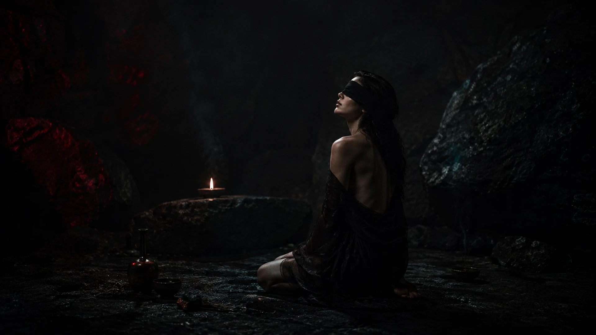

Novo álbum · 17 agosto 2026
O Arranjo doSubmundo
Onze faixas sobre o que resta quando a forma humana não segura mais o que sente.
Ver álbum →


Seleção oficial
AMORFA, em rotação
Uma porta de entrada para o catálogo — lançamentos, faixas essenciais e o percurso mais recente do projeto.
Abrir no Spotify ↗


Sobre o projeto
Pop eletrônico sombrio e música alternativa. Composição, direção visual e experimentação sonora — construído inteiramente com ferramentas de IA generativa, curadoria e método.
Sobre a AMORFA →